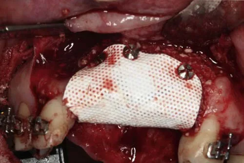
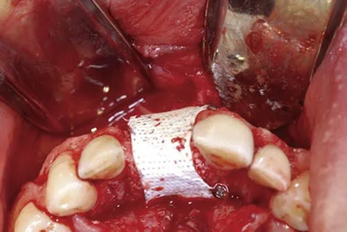

نسخه استخراجشده؛ ترجمه یا تأیید علمی انجام نشده است. وضعیت: captured
در محل گرافت یک مسابقه در جریان است: سلولهای بافت نرم سریعاند، سلولهای استخوانساز کند. ممبران کاری جز عادلانهکردن این مسابقه نمیکند — راه سریعها را میبندد تا کندها برسند. اگر ممبران نباشد، نقص با بافت نرم پر میشود.
هفت ویژگی ممبران ایدهآل: سازگاری زیستی؛ حفظ فضا (قوام کافی برای نگهداشتن شکل ریج)؛ تثبیت لختهی خون؛ انسداد سلولی (تخلخلی که مانع ورود بافت فیبروز شود)؛ استحکام مکانیکی؛ سرعت جذب قابلپیشبینی که با سرعت بازسازی استخوان همخوان باشد؛ و قابلیت تغییر شکل و اندازه بدون از دست دادن سفتی.
خانوادهی اول — غیرقابلجذب. سازگاری عالی، استحکام و سفتی بیشتر و حفظ فضای بهتر از ممبرانهای جذبی بدون پشتیبان. اما نیاز به جراحی دوم دارند و دهیسنس زخم در آنها شایعتر است.
• e-PTFE — اولین نسل و استاندارد طلایی دههی ۱۹۹۰. تخلخل بالا فضا برای رشد استخوان میداد، اما همان تخلخل باعث میزان بالای اکسپوژر و عفونت بهدلیل ورود باکتری شد.
• d-PTFE — تخلخل کمتر از ۰٫۳ میکرون، اوایل دههی ۱۹۹۰ با نام Cytoplast. تراکم بالا و منفذ ریز عبور باکتری را میبندد ولی انتشار اکسیژن و مولکولهای کوچک را اجازه میدهد. به همین دلیل خطر کلونیزاسیون باکتریایی کمتر و عفونت کمتری نسبت به e-PTFE دارد؛ و چون بافت داخل منافذ رشد نمیکند، برداشتنش بسیار آسانتر است.
• PTFE با تقویت تیتانیوم — استرات تیتانیومی اجازه میدهد ممبران را به شکل و حجمی که طرح ترمیمی میخواهد فرم دهی. مطالعات با این نسل، موفقیت زیادی در بازسازی افقی و عمودی نشان دادهاند، چون همزمان فضا را حفظ میکنند، تحرک گرافت را کم میکنند و بافت نرم را بیرون نگه میدارند.
• مش تیتانیوم — سدّ غیرقابلجذبی که بدون فروریختن فضا را نگه میدارد؛ عیب اصلیاش بروز بیشتر دهیسنس و دشواری حفظ پوشش بافت نرم در طول ترمیم طولانی است.
خانوادهی دوم — قابلجذب. مزیت روشن: جراحی دوم لازم نیست، پس ناراحتی و موربیدیتی کمتر است. جنسها: پلیاسترها (پلیگلیکولیک/پلیلاکتیک اسید) و کلاژنهای بافتی — کلاژن، پریکاردیوم و ماتریکس درمال آسلولار. ممبرانهای کلاژنی زنوژنیک امروز پرکاربردترین ممبران در ایمپلنتولوژیاند.

زمان جذب کلاژن را با اندازهی نقص جور کن:
• نوار/پلاگ کلاژن: جذب حدود ۱۰ تا ۱۴ روز — فقط برای کنترل خونریزی و نگهداشتن لخته در ساکت؛ و برای GBR اندیکاسیون ندارد.
• ممبران کلاژن معمولی: جذب در ۳ تا ۴ ماه — نقصهای کوچک تا متوسط.
• ممبران کلاژن Extended: جذب در ۴ تا ۶ ماه — نقصهای بزرگتر که ترمیم طولانیتری میخواهند.
• کلاژن کراسلینکشده (با افزایش چگالی پیوند عرضی) — رایجترین انتخاب برای نقصهای بزرگتر که زمان ترمیم طولانی و مهار گرافت میخواهند.
و یک تفاوت رفتاری مهم: ماتریکس درمال آسلولار و پریکاردیوم در برابر سوراخشدن حین ترمیم بسیار مقاوماند، در حالی که کلاژن مرطوب نرم میشود و اگر کشش روی آن بیاید مستعد پارگی و سوراخشدن است.
اندازه — بزرگتر از آنچه فکر میکنی: ممبران باید کل گرافت را کاملاً بپوشاند و پس از پرشدن محل، هنوز بهقدری بزرگ باشد که هیچ ذرهای بیرون نماند. تجربه میگوید حداقل اندازه ۲۰×۲۰ میلیمتر و در تقریباً همهی گرافتهای بزرگ ۲۰×۴۰ میلیمتر لازم است. پس از گذاشتن پیوند، ممبران با ۲ تا ۳ میلیمتر همپوشانی روی استخوان بومی کشیده میشود.
هرگز چند ممبران کوچک را به هم وصله نکن — این کار نهفقط دشوار است، بلکه یک متغیر تازه به مسئلهی ایزولاسیون طولانیمدت گرافت میافزاید.
قاعدهی ۲ میلیمتر: d-PTFE باید دستکم ۲ میلیمتر از سطح ریشهی دندان مجاور فاصله داشته باشد؛ همین فاصله برای مش تیتانیوم هم لازم است. اما برای ممبرانهای جذبی این قاعده حیاتی نیست و میتوان آنها را مستقیماً روی ریشهها قرار داد بدون آنکه ممبران شکست بخورد. استراتهای تیتانیومی نزدیک به ریشهها اغلب به اکسپوژر ممبران و حجم گرافت ناقص در آن ناحیه میانجامند.
تثبیت — پیش از ریختن پیوند: توصیه میشود ممبران پیش از گذاشتن تودهی پیوند تثبیت شود؛ این کار تضمین میکند ممبران بعداً جابهجا نشود و حد اپیکالی خودِ گرافت را تعریف میکند. تثبیت با تک یا بخیه، ترجیحاً در سمت لینگوال/پالاتال، و در گرافتهای بزرگ با تثبیت اضافی برای مهار حرکت.
هدف تثبیت، صفر کردن حرکت است. اگر تک ممکن نیست، ممبران را میتوان زیر فلپ لینگوال فرو برد و لبهی کرونالش را در بخیههای بستهشدن گرفت. و توجه: ممبران شکننده بهراحتی دور تک پاره میشود و لنگرش را از دست میدهد.

نوع سؤال: ساخت کلمه · 4 خانه
حروف منبع: ل · خ · ت · ه